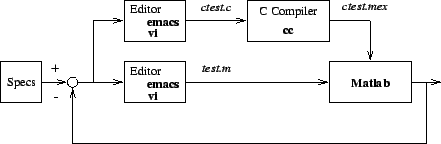
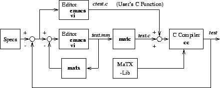

<!DOCTYPE HTML PUBLIC "-//W3C//DTD HTML 3.2 Final//EN">
<!-- Converted with jLaTeX2HTML 98.1p1 release (March 2nd, 1998) + JP patch 2.0 (March 16th, 1998)
patched by Kenshi Muto (mutou@three-a.co.jp), Three-A Systems,Co.,Ltd.
LaTeX2HTML 98.1p1 release (March 2nd, 1998)
originally by Nikos Drakos (nikos@cbl.leeds.ac.uk), CBLU, University of Leeds
* revised and updated by:  Marcus Hennecke, Ross Moore, Herb Swan
* with significant contributions from:
  Jens Lippmann, Marek Rouchal, Martin Wilck and others  -->
<HTML>
<HEAD>
<TITLE>$B%W%m%0%i%`:n@.<j=g(J</TITLE>
<META NAME="description" CONTENT="$B%W%m%0%i%`:n@.<j=g(J">
<META NAME="keywords" CONTENT="MaTX">
<META NAME="resource-type" CONTENT="document">
<META NAME="distribution" CONTENT="global">
<META HTTP-EQUIV="Content-Type" CONTENT="text/html; charset=iso-2022-jp">
<LINK REL="STYLESHEET" HREF="MaTX.css">
<LINK REL="next" HREF="node8.htm">
<LINK REL="previous" HREF="node6.htm">
<LINK REL="up" HREF="node4.htm">
<LINK REL="next" HREF="node8.htm">
</HEAD>
<BODY BGCOLOR=NavajoWhite>
<!-- Navigation Panel -->
<A NAME="tex2html640"
 HREF="node8.htm">
</A> 
<A NAME="tex2html636"
 HREF="node4.htm">
</A> 
<A NAME="tex2html630"
 HREF="node6.htm">
</A> 
<A NAME="tex2html638"
 HREF="node1.htm">
</A> 
<A NAME="tex2html639"
 HREF="node247.htm">
</A> 
<BR>
<STRONG> Next:</STRONG> <A NAME="tex2html641"
 HREF="node8.htm">MATX$B$NF0:n4D6-(J</A>
<STRONG> Up:</STRONG> <A NAME="tex2html637"
 HREF="node4.htm">$B$O$8$a$K(J</A>
<STRONG> Previous:</STRONG> <A NAME="tex2html631"
 HREF="node6.htm">MATX$B$N9=B$(J</A>
<BR>
<BR>
<!-- End of Navigation Panel -->

<H1><A NAME="SECTION00430000000000000000">
$B%W%m%0%i%`:n@.<j=g(J</A>
</H1>
<BR>
<DIV ALIGN="CENTER"><A NAME="fig:flowmatlab">&#160;</A><A NAME="338">&#160;</A>
<TABLE WIDTH="50%">
<CAPTION><STRONG>$B?^(J 1.4:</STRONG>
Matlab$B$K$h$k%W%m%0%i%`:n@.<j=g(J</CAPTION>
<TR><TD>
<DIV ALIGN="CENTER">

<!-- MATH: $\includegraphics[width=0.8\linewidth]{Fig/flow-matlab.eps}$ -->
</DIV></TD></TR>
</TABLE>
</DIV>
<BR>
<BR>
<DIV ALIGN="CENTER"><A NAME="fig:flowmatx">&#160;</A><A NAME="394">&#160;</A>
<TABLE WIDTH="50%">
<CAPTION><STRONG>$B?^(J 1.5:</STRONG>
MATX$B$K$h$k%W%m%0%i%`:n@.<j=g(J</CAPTION>
<TR><TD>
<DIV ALIGN="CENTER">

<!-- MATH: $\includegraphics[width=0.8\linewidth]{Fig/flow-matx.eps}$ -->
</DIV></TD></TR>
</TABLE>
</DIV>
<BR>$B?^(J<A HREF="node7.htm#fig:flowmatlab">1.4</A>$B$H?^(J<A HREF="node7.htm#fig:flowmatx">1.5</A>$B$O!$(J
Matlab$B$H(JMATX$B$N%W%m%0%i%`$r:n@.$9$k<j=g$r<($7$F$$$k!#(J
Matlab$B$G%W%m%0%i%`$r:n@.$9$k$K$O!$%f!<%6$O!$;EMM$K$7$?$,$C$F%"%k%4%j%:%`$r(J
m-file(<TT>test.m</TT>)$B$NCf$K<B8=$9$k!#(J
$B;EMM$rK~$?$9$^$G(Jm-file$B$N%F%9%H$H=q$-D>$7$,7+$jJV$5$l$k!#(J<A NAME="352">&#160;</A>
C$B8@8l$d(JFortran$B$G=q$+$l$?%U%!%$%k(J
(<TT>ctest.c)</TT>$B$r$=$l$>$l$N8@8l$N%3%s%Q%$%i$G%3%s%Q%$%k$9$l$P(J
(<TT>ctest.mex</TT>)$B!$(JMatlab$B$N4X?t$+$i8F$S=P$9$3$H$,$G$-$k!#(J

<P>
MATX$B$G%W%m%0%i%`$r:n@.$9$k$K$O!$;EMM$K$7$?$,$C$F%"%k%4%j%:%`$r(J
$B%(%G%#%?(J(<I>vi, emacs)</I>$B$r;H$C$F(Jmm$B%U%!%$%k(J(<TT>test.mm</TT>)$B$NCf$K4X?t$H$7$F(J
$B<B8=$9$k!#(J<A NAME="358">&#160;</A><A NAME="359">&#160;</A>
$B%$%s%?!<%W%j%?(J(<I>matx</I>)$B$r;H$($P!$%U%!%$%kC10L!$4X?tC10L!$$^$?$O9TC10L(J
$B$K2qOCE*$K(Jmm$B%U%!%$%k$r%F%9%H$9$k$3$H$,$G$-$k!#(J
$BF0:n3NG'$N=*$C$?(Jmm$B%U%!%$%k$O!$(J<I>matc</I>$B$K$h$C$F(JC$B8@8l$KJQ49$5$l$k!#(J
C$B8@8l$N%W%m%0%i%`(J(<TT>ctest.c</TT>)$B$r(Jmatc$B$N=PNO%3!<%I$K%j%s%/$9$l$P!$(J
MATX$B$N4X?t$+$i4JC1$K(JC$B8@8l$N4X?t$r8F$S=P$9$3$H$,$G$-$k!#(J
$BA4$F$N(JC$B8@8l$N%U%!%$%k$,40@.$7$?8e$O!$(JC$B%3%s%Q%$%i$K$h$C$F%3%s%Q%$%k$7!$<B9T(J
$B%i%$%V%i%j(J(<TT>MaTX-Lib</TT>)$B$H%j%s%/$7$F<B9T%W%m%0%i%`(J(<TT>test</TT>)$B$r:n@.$9$k!#(J
$B:G8e$K!$<B9T%U%!%$%k$r<B9T$7$FA4$F$N;EMM$,K~$?$5$l$F$$$k$+%A%'%C%/$9$k!#(J
<BR><HR>
<ADDRESS>
Masanobu KOGA
$BJ?@.(J10$BG/(J8$B7n(J19$BF|(J
</ADDRESS>
</BODY>
</HTML>
